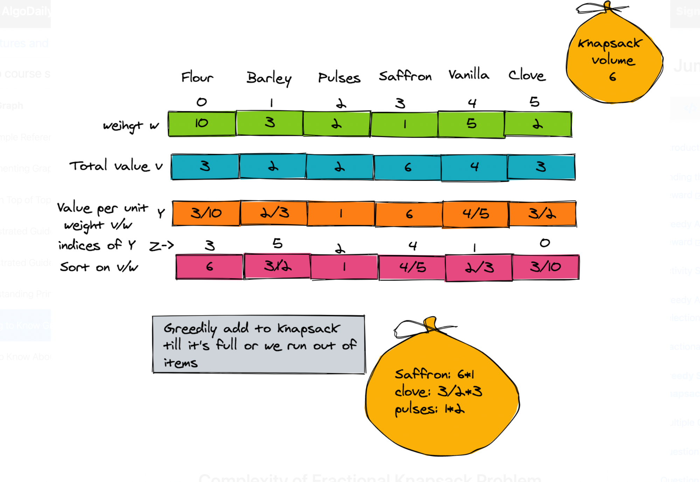

Dynamic Programming (DP) is an algorithmic technique for solving an optimization problem by breaking it down into simpler subproblems and utilizing the fact that the optimal solution to the overall problem depends upon the optimal solution to its subproblems.
Let’s take the example of the Fibonacci numbers.
As we all know, Fibonacci numbers are a series of numbers in which each number is the sum of the two preceding numbers. The first few Fibonacci numbers are 0, 1, 1, 2, 3, 5, and 8, and they continue on from there.
If we are asked to calculate the nth Fibonacci number, we can do that with the following equation,
Fib(n) = Fib(n-1) + Fib(n-2), for n > 1
As we can clearly see here, to solve the overall problem (i.e. Fib(n)), we broke it down into two smaller subproblems (which are Fib(n-1) and Fib(n-2)). This shows that we can use DP to solve this problem.
Characteristics of Dynamic Programming
1.Overlapping Subproblems
2.Optimal Substructure Property
Dynamic Programming Methods
1.Top-down with Memoization
2.Bottom-up with Tabulation
The Bellman-Ford algorithm is a dynamic programming algorithm, and dynamic programming is a basic paradigm in algorithm design used to solve problems by relying on intermediate solutions to smaller subproblems. The main step for solving a dynamic programming problem is to analyze the problem’s optimal substructure and overlapping subproblems.
The runtime of the Bellman-Ford algorithm is O(m*n); for n iterations, we loop through all the edges. This is slower than Dijkstra’s algorithm. However, it is simpler to implement and it can handle negative edge weights. For storage, in the pseudocode above, we keep n different arrays d(k) of length n. This isn’t necessary: we only need to store two of them at a time. This is noted in the comment in the pseudocode.
d(0)[v] = ∞ ∀ v ∈ V
d(0)[s] = 0
d(k)[v] = None ∀ v ∈ V ∀k > 0
for k = 1, . . . , n − 1 do
d(k)[v] ← d(k−1)[v]
for (u,v) ∈ Edo
d(k)[v] ← min{d(k)[v],d(k−1)[u]+w(u,v)}
// here we can release the memory for d(k−1), we’ll never need it again.
return d(n)[v],∀ v ∈ V
The value d(k)[v] is the cost of the shortest path from s to v with at most k edges in it. Once we realize this, a proof by induction (similar to the one in Lecture Notes 11) falls right out, with the inductive hypothesis that “d(k)[v] is the cost of the shortest path from s to v with at most k edges in it."
The thing that makes that Bellman-Ford algorithm work is that that the shortest paths of length at most k can be computed by leveraging the shortest paths of length at most k−1.
More specifically, we relied on the following recurrence relation between the intermediate solutions:
d(k)[v] = minu ∈ V{ d(k−1)[u] + w(u,v) }
where dk [v ] is the length of the shortest path from source s to node v using at most k edges, and w(u,v) is the weight of edge (u,v). (Above, we are assuming w(v,v) = 0).
This idea of using the intermediate solutions is similar to the divide-and-conquer paradigm. However, a divide-and-conquer algorithm recursively computes intermediate solutions once for each subproblem, but a dynamic programming algorithm solves the subproblems exactly once and uses these results multiple times.
The idea of dynamic programming is to have a table of solutions of subproblems and fill it out in a particular order (e.g. left to right and top to bottom) so that the contents of any particular table cell only depends on the contents of cells before it. For example, in the Bellman-Ford algorithm, we filled out d(k−1) before we filled out d(k); and in order to fill out d(k), we just had to look back at d(k−1), rather than compute anything new.
Dynamic programming is a good candidate paradigm to use for problems with the following properties:
• Optimal substructure gives a recursive formulation; and
• Overlapping subproblems give a small table, that is, we can store the precomputed answers such that it doesn’t actually take too long when evaluating a recursive function multiple times.
1 Optimal Substructure
By this property, we mean that the optimal solution to the problem is composed of optimal solutions to smaller independent subproblems.
For example, the shortest path from s to t consists of a shortest path P from s to k (for node k on P) and a shortest path from k to t. This allows us to write down an expression for the distance between s and t with respect to the lengths of sub-paths:
d(s,t) = d(s,k) + d(k,t), for all k on a shortest s − t path We used this in the Bellman-Ford algorithm when we wrote
d(k)[u] = min{d(k−1)[v] + w(u,v)}. v∈V
2 Overlapping subproblems
The goal of dynamic programming is to construct a table of entries, where early entries in the table can be used to compute later entries. Ideally, the optimal solutions of subproblems can be reused multiple times to compute the optimal solutions of larger problems.
For our shortest paths example, d(s,k) can used to compute d(s,t) for any t where the shortest s − t path contains k . To save time, we can compute d (s , k ) once and just look it up each time, instead of recomputing it.
More concretely in the Bellman-Ford example, suppose that (v,u) and (v,u′) are both in E. When we go to compute d(k)[u], we’ll need d(k−1)[v]. Then when we go to compute d(k)[u′], we’ll need dk−1[v] again. If we just set this up as a divide-and-conquer algorithm, this would be extremely wasteful, and we’d be re-doing lots of work. By storing this value in a table and looking it up when we need it, we are taking advantage of the fact that these subproblems overlap.
The thing that makes that Bellman-Ford algorithm work is that that the shortest paths of length at most k can be computed by leveraging the shortest paths of length at most k − 1. More specifically, we relied on the following recurrence relation between the intermediate solutions: d(k)[v] = min{d(k−1)[u] + w(u,v)} u∈V where dk [v ] is the length of the shortest path from source s to node v using at most k edges, and w(u,v) is the weight of edge (u,v). (Above, we are assuming w(v,v) = 0). This idea of using the intermediate solutions is similar to the divide-and-conquer paradigm. However, a divide-and-conquer algorithm recursively computes intermediate solutions once for each subproblem, but a dynamic programming algorithm solves the subproblems exactly once and uses these results multiple times.
The Floyd-Warshall Algorithm solves the All Pairs Shortest Path (APSP) problem: given a
graph G, find the shortest path distances d(s,t) for all s,t ∈ V, and, for the purpose of
storing the shortest paths, the predecessor π(s,t) which is the node right before t on the
s-t shortest path.
Runtime.
The runtime of the Floyd-Warshall algorithm is proportional to the size of the table {di(u,v)}i,u,v since filling each entry of the table only depends on at most two other entries filled in before it. Thus, the runtime is O(n3).
Space usage.
for both the algorithms, the Floyd-Warshall and Bellman-Ford algorithms, we can choose to store only two rows of the table instead of the complete table in order to save space. This is because the row being populated always depends only on the row right below it. This space saving optimization is not a general property of tables formed as a result of the dynamic programming method, and the slot dependencies in some dynamic programming problems may lie on arbitrary positions on the table thereby forcing us to store the complete table.
dk(u,u) = 0,∀u ∈ V,k ∈ {0,...,n}
dk(u,v) = ∞,∀u,v ∈ V,u ̸= v,k ∈ {1,...,n} d0(u,v) = c(u,v),∀(u,v) ∈ E
d0(u,v) = ∞,∀(u,v) ̸∈ E
for k = 1,...,n do
for(u,v)∈V do
dk(u,v) = min{dk−1(u,v),dk−1(u,k) + dk−1(k,v)}
//update the estimate of d(u,v)
return dn(u,v),∀ u,v ∈ V
Correctness when there are no negative cycles In the k-th iteration of the Floyd-Warshall algorithm
dk (u, v ) is the minimum weight of a u → v path that uses as intermediate nodes only nodes from {1, . . . , k }. What does the recurrence relation represent? If P is a shortest path from u to v using 1, . . . , k as intermediate nodes, there are two cases. Assume that P is a simple path, since shortest paths are simple when there are no negative cycles:
• Case 1: P contains k : In this case, we know that neither the path from u to k nor the path from k to v contains any nodes that are greater than k − 1. In this case, we can simply use dk(u,v) = dk−1(u,k) + dk−1(k,v).
• Case 2: P does not contain k : We can say that dk(u,v) = dk−1(u,v)
We initialize each d0(u,v) as the edge weight c(u,v) if (u,v) ∈ E, else we set it to ∞ in the bottom-most row in our dynamic programming table. Now, as we increment k to 1, we effectively find the minimum distance path between u,v ∈ V that go through node 1, and populate the table with the results. We continue this process to find the shortest paths that go through nodes 1 and 2, then 1, 2, and 3 and so on until we find the shortest path through all n nodes.
Negative cycles.
The Floyd-Warshall algorithm can be used to detect negative cycles: examine whether dn(u, u) < 0 for any u ∈ V . If there exists u such that dn(u, u) < 0, there is a negative cycle, and if not, then there isn’t. The reason for this is that if there is a simple path P from u to u of negative weight (i.e., a negative cycle containing u), then dn(u,u) will be at most its weight, and hence, will be negative. Otherwise, no path can cause dn(u,u) to be negative.
Let’s speculate about APSP for a moment. Consider the case when the edge weights are nonnegative. We know we can compute APSP by running Dijkstra’s algorithm on each node v ∈ V and obtain a total runtime of O(mn + n2 log n). The runtime of the Floyd-Warshall algorithm, on the other hand, is O(n3). We know that in the worst case m = O(n2), and thus, the Floyd-Warshall algorithm can be at least as bad as running Dijkstra’s algorithm n times! Then why do we care to explore this algorithm? The reason is that the Floyd-Warshall algorithm is very easy to implement compared to Dijkstra’s algorithm. The benefit of using simple algorithms is that they can often be extended and in practice can run relatively faster compared to algorithms that may have a huge overhead.
An added benefit of the Floyd-Warshall algorithm is that it also supports negative edge weights, whereas Dijkstra’s algorithm does not. 1
As mentioned, the optimum substructure with overlapping subproblems for shortest paths is that for all node k on an s-t shortest path, d(s, t) = d(s, k) + d(k, t). We refine this observation as follows. Suppose that the nodes of the graph are identified with the integers from 1 to n. Then, if k is the maximum node on an s-t shortest path, then d(s,t) = d(s, k) + d(k, t) and moreover, the subpaths from s to k and from k to t only use nodes up to k − 1 internally.
We hence get independent subproblems in which we compute dk(s,t) for all s,t that are the smallest weight of an s-t path that only uses nodes 1,...,k internally. This motivates the Floyd-Warshall algorithm, Algorithm 2 below (please note that we will refer to the nodes of G by the names 1,...,n).
1. Identify optimal substructure:
how are we going to break up an optimal solution into optimal sub-solutions of sub-problems? We’re looking for a way to do this so that there are overlapping sub-problems, so that a dynamic programming approach will be effective.
2. Recursively define the value of an optimal solution:
Write down a recursive formulation of the optimum, in terms of sub-solutions.
3. Find the optimal value:
Turn this recursive formulation into a dynamic programming algorithm to compute the value of the optimal solution.
4. Find the optimal solution:
Once we’ve figured out how to find the cost of the optimal solution, we can go back and figure out how to keep enough information in our algorithm so that we can find the solution itself.
5. Tweak the implementation:
Often it’s the case that the solutions that we come up with in the previous steps aren’t implemented in the best way. Maybe they are storing more than they need to, like we saw with our first pass at the Floyd-Warshall algorithm. In this final step (which we won’t go into in too much detail in CS161), we go back through the DP solution we’ve designed, and optimize it for space, running time, and so on.
This is a classic problem, defined as the following:
We have n items, each with a value and a positive weight. The i-th item has weight wi and
value vi . We have a knapsack that holds a maximum weight of W . Which items do we put
in our knapsack to maximize the value of the items in our knapsack? For example, let’s say
that W = 10; that is, the knapsack holds a weight of at most 10. Also suppose that we have
four items, with weight and value:
Item Weight Value
A 6 25
B 3 13
C 4 15
D 2 8
Two variations for this problem :
1. Unbounded
2. 0-1

We define K (x ) to be the optimal solution for a knapsack of capacity x .
Suppose K (x ) happens to contain the i-th item. Then, the remaining items in the knapsack must have a total weight of at most x − wi .
The remaining items in the knapsack must be an optimum solution.
(If not, then we could have replaced those items with a more highly valued set of items.) This gives us a nice subproblem structure, yielding the recurrence
K(x)= max(K(x−wi)+vi). i:wi≤x
Developing a dynamic programming algorithm around this recurrence is straightforward. We first initialize K(0) = 0, and then we compute K(x) values from x = 1,...,W. The overall runtime is O(nW).
Psuedo Code
K[0] ← 0
for x = 1, . . . , W do
K[x] ← 0
for i = 1,...,n do
if wi ≤ x then
K[x] ← max{K[x],K[x − wi] + vi}
return K[W]
The subproblems that we need must keep track of the knapsack size as well as which items are allowed to be used in the knapsack.
Because we need to keep track of more information in our state, we add another parameter to the recurrence (and therefore, another dimension to the DP table).
Let K(x,j) be the maximum value that we can get with a knapsack of capacity x considering only items at indices from 1,...,j. Consider the optimal solution for K(x,j). There are two cases:
1. Item j is used in K (x , j ). Then, the remaining items that we choose to put in the knapsack must be the optimum solution for K(x − wj , j − 1). In this case, K(x, j) = K(x −wj,j −1)+vj.
2. Item j is not used in K(x, j). Then, K(x, j) is the optimum solution for K(x, j − 1). In this case, K(x, j) = K(x, j − 1).
So, our recurrence relation is: K(x,j) = max{K(x −wj,j −1)+vj,K(x,j −1)}.
Now, we’re done: we simply calculate each entry up to K(W,n), which gives us our final answer. Note that this also runs in O(nW) time despite the additional dimension in the DP table.
This is because at each entry of the DP table, we do O(1) work.
Psuedo Code
for x = 1, . . . , W do
K[x,0] ← 0
for j = 1,...,n do
K[0,j] ← 0
for j = 1,...,n do
for x = 1, . . . , W do
K[x, j] ← K[x, j − 1]
if wj ≤ x then
K[x,j] ← max{K[x,j],K[x − wj,j − 1] + vj}
return K[W, n]
Content for tab 10.
Those who cannot remember the past are condemned to repeat it.